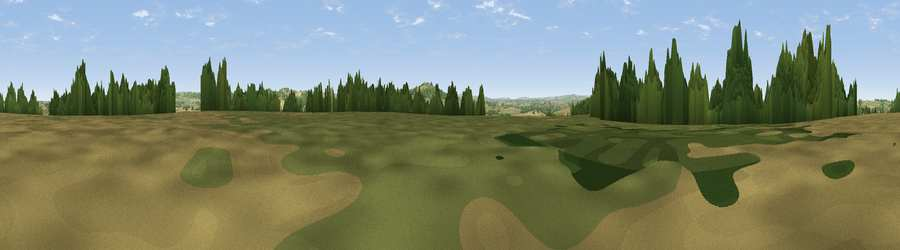

Idlicote Hill
#27726 in England · top 58% of its area beats it · near IdlicoteThe view, rendered

A 360° render of this exact spot computed from the terrain model, tree cover and land cover — summer colours, afternoon light, calibrated against photographs of famous viewpoints. Real trees, hedges and buildings will differ in detail.
The panorama
Grey silhouette: terrain skyline in each direction (720 bearings, Earth curvature and refraction included). Dashed green: skyline with trees (+15 m) and buildings (+8 m) as obstacles. Blue strip: how far the ground is visible on each bearing.
Where the view opens
Wedge length = distance to the farthest visible ground on that bearing (vegetation-aware). Rings at 10, 25 and 50 km.
What fills the view
43% cropland · 43% grassland · 13% woodland · 1% built-up
Angular shares of the visible panorama (visual magnitude), not map area. Landscape diversity 0.46 (0–1 Shannon).
Key numbers
More beautiful places nearby
The staircase of upgrades: each row has a higher view potential than everything closer. Driving times are estimates from straight-line distance, calibrated against real road routing — check an actual route before setting out.
| Place | Direction | Drive | Score |
|---|---|---|---|
| Viewpoint near Honington | SW · 2 km | ~5 min | 49.8 |
| Castle Hill | SSE · 4 km | ~8 min | 59.9 |
| Viewpoint near Upper Brailes | S · 4 km | ~9 min | 68.5 |
| Viewpoint near Upper Tysoe | ESE · 5 km | ~11 min | 70.4 |
| Viewpoint near Ilmington | W · 8 km | ~16 min | 72.6 |
| Viewpoint near Meon Vale | W · 12 km | ~22 min | 77.0 |
| Broadway Hill | WSW · 19 km | ~32 min | 77.7 |
| Viewpoint near Elmley Castle | W · 31 km | ~49 min | 80.5 |
52.08733, -1.57997 · source: dobih hill · position refined by local search. Computed location — check access rights before visiting.